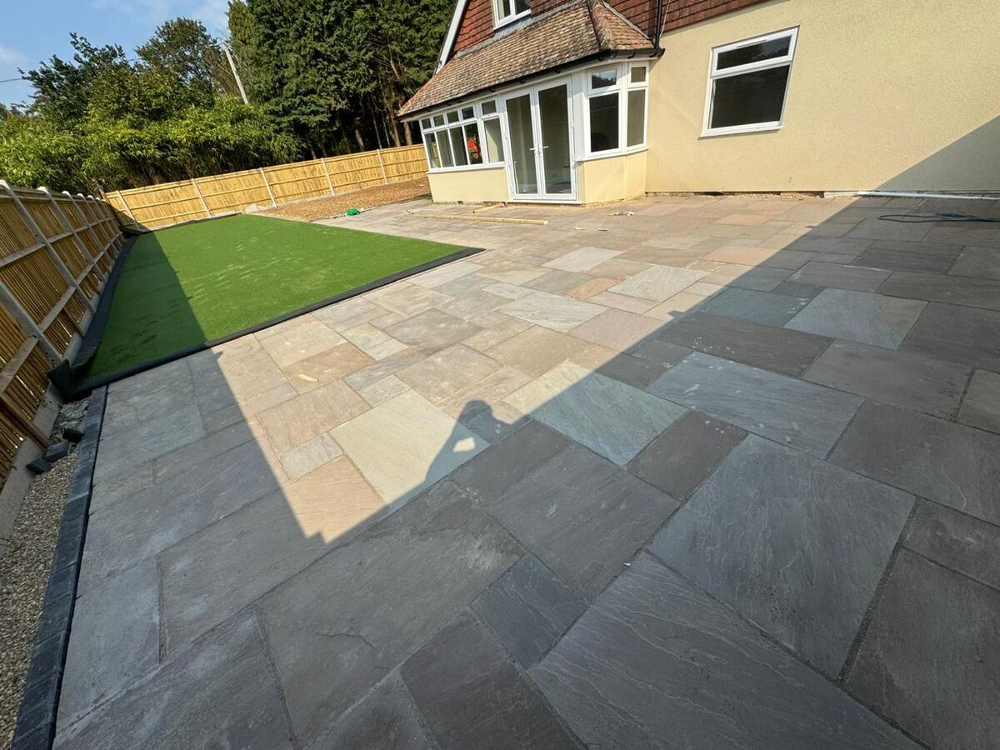
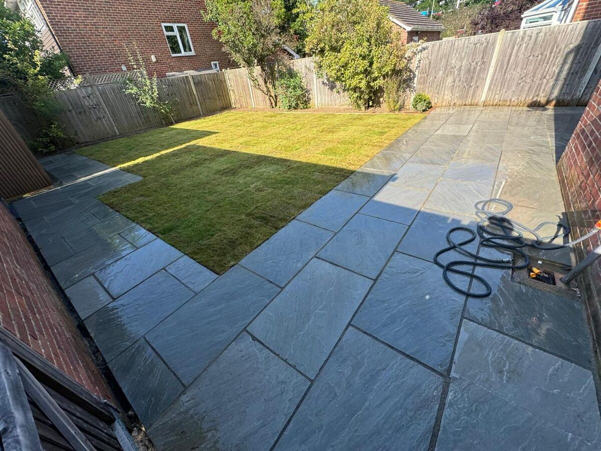

If you are planning a new patio for your Chichester home, one of the first questions on your mind will be cost. The honest answer is that patio prices vary enormously — from a few thousand pounds for a straightforward concrete slab to well over £30,000 for a bespoke natural stone installation with integrated features.
At A Sterling Landscapes, we specialise in premium patio installations across Chichester and West Sussex. In this guide, we break down exactly what influences patio costs, what you can expect to pay for different materials and finishes, and how to ensure you get genuine value from your investment.
What Affects the Cost of a Patio?
Several factors determine what your patio will cost. Understanding these helps you make informed decisions and set a realistic budget.
1. Size and Area
The most obvious factor. A 20-square-metre patio will cost significantly less than a 60-square-metre entertaining space. Most patios in Chichester fall between 15 and 40 square metres, though larger properties often demand more expansive designs.
2. Material Choice
This is where costs diverge most dramatically. Budget concrete pavers might cost £20–30 per square metre for materials alone, while premium Indian sandstone runs £40–80 per square metre, and top-end porcelain can exceed £100 per square metre.
3. Ground Conditions
Chichester sits on a mix of clay, chalk and gravel subsoils. If your garden has poor drainage, requires significant excavation, or needs a retaining wall to create a level surface, preparation costs will increase. This groundwork is invisible once complete but essential for a patio that lasts decades.
4. Access and Location
Can a mini digger reach your garden? Is there rear access for deliveries? Restricted access means more manual labour, which increases costs. Many Chichester properties — particularly in the city centre and older areas like The Hornet and Whyke — have limited access that needs careful planning.
5. Design Complexity
A simple rectangular patio with one material is the most cost-effective. Curved edges, mixed materials, steps, integrated lighting, raised planters and drainage channels all add to the price — but also to the visual impact and usability of the finished space.
Patio Cost Guide by Material
The following prices are based on our experience of patio installations across Chichester and West Sussex. They include materials, labour, groundworks and VAT, for a typical 25-square-metre patio.
| Material | Cost Range (25m²) | Characteristics |
|---|---|---|
| Concrete block paving | £2,500 – £4,500 | Budget-friendly, wide colour range, easy to repair |
| Indian sandstone | £4,000 – £7,500 | Natural warmth, unique variation, classic appearance |
| Limestone | £5,000 – £8,500 | Cool, elegant tones, smooth finish, premium feel |
| Granite | £6,000 – £10,000 | Extremely durable, contemporary, heavy |
| Porcelain | £5,500 – £9,500 | Low maintenance, consistent colour, slip-resistant |
| Natural slate | £5,000 – £8,000 | Dramatic dark tones, textured surface |
| Bespoke mixed materials | £8,000 – £15,000+ | Combined stone, setts, borders — designer finish |
These figures are guidelines. Every project is unique, and costs can vary based on the specific factors outlined above.
What About Labour Costs?
Labour typically accounts for 40–60% of the total patio cost. In Chichester and the surrounding area, experienced landscaping teams charge between £200 and £400 per day per person. A premium patio installation usually requires a team of two to four skilled tradespeople working for three to seven days.
Beware of quotes that seem too cheap. Landscaping is skilled work, and the quality of groundwork preparation directly determines how your patio performs over time. A properly prepared sub-base with correct falls for drainage is worth every penny — it is the difference between a patio that lasts 20 years and one that develops problems within five.
Hidden Costs to Watch For
- Skip hire and waste removal — Excavated earth and old materials need removing. Budget £250–500 for skip hire.
- Drainage — If your garden has poor natural drainage, you may need a channel drain or soakaway. This can add £500–1,500.
- Steps and level changes — Each step adds £200–500 depending on materials and complexity.
- Edging and borders — Granite setts or bullnose edging improves the finish but adds £15–30 per linear metre.
- Pointing and jointing — Premium resin-based jointing compounds cost more than standard cement but last far longer and look significantly better.
- Garden reinstatement — New turf, planting or fencing adjacent to the patio area may be needed.
Premium vs Budget: What Is the Real Difference?
You might wonder whether a £3,000 patio and a £10,000 patio really look that different. The answer, honestly, is yes — dramatically.
Premium patios use thicker, higher-quality stone or porcelain with consistent calibration. The sub-base is deeper and more thoroughly compacted. Jointing is done with specialist compounds that resist weed growth and discolouration. Edges are precisely cut, falls are engineered for drainage, and the overall finish has a level of precision that transforms the space.
At A Sterling Landscapes, every patio we build follows the same exacting standards — because we know that the quality of the groundwork determines the longevity of the surface. Our clients consistently tell us that the finished result exceeds their expectations.

How to Get the Best Value
- Get multiple quotes — but compare like for like. Check what is included in the groundworks, materials and finishing.
- Ask about materials — a good landscaper will explain the pros and cons of each option for your specific garden.
- Check previous work — visit our patio gallery to see the quality of finish we deliver.
- Think long-term — a well-built patio lasts 20–30 years. Spread that cost over its lifetime and the daily cost is pennies.
- Plan for the whole garden — if you are likely to want fencing, planting or lighting later, consider doing it all at once to save on mobilisation costs.
Why Choose A Sterling Landscapes for Your Chichester Patio?
We have been building premium patios across Chichester and West Sussex for over 12 years. Our team of skilled professionals takes pride in delivering exceptional results — from the invisible groundwork to the final jointed finish.
Every project begins with a free consultation where we visit your property, discuss your vision and provide a detailed, transparent quotation. There are no hidden costs and no surprises.
Ready to discuss your patio project? Get a free quote or call us on 07795 599 909.
Get a Free Patio Quote
Tell us about your project and we will arrange a free site visit and detailed quotation.